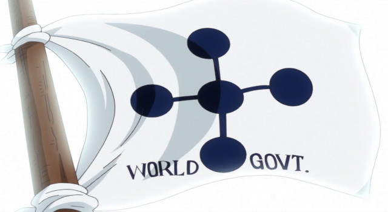
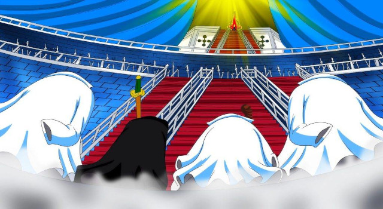

História
O Governo Mundial é uma organização política composta pela maior parte do Mundo, sendo aparentemente governada pelos Cinco Anciões, que na verdade respondem a um governante conhecido simplesmente como Im, cuja existência dentro do Governo Mundial não é conhecida pelo mundo em geral.
Foi estabelecido há 800 anos. Os marinheiros servem como sua principal organização militar, liderada pelo Almirante da Frota, enquanto a Cipher Pol opera nos bastidores, seja através de sabotagem, reconhecimento, espionagem, e/ou assassinato; seus inimigos mais poderosos são em grande parte piratas e revolucionários.
O Comandante-Chefe supervisiona os marinheiros e a Cipher Pol, bem como os Shichibukai, pelo menos oficialmente, e está diretamente abaixo dos Cinco Anciões. Impel Down serve como a prisão de segurança máxima mais impenetrável do Governo Mundial.
Coletivamente servindo como os antagonistas mais proeminentes da série, o Governo Mundial é amplamente retratado como uma entidade corrupta, particularmente através da aplicação da justiça absoluta, a supressão da pesquisa no Século Perdido, e a depravação dos aristocráticos Nobres Mundiais.
O Governo Mundial é afiliado com cerca de cento e setenta países de todo o mundo. Os países-membros mantêm autonomia e executam os seus próprios assuntos internos (embora o Governo Mundial que, por vezes, chega a intervir), mas cooperam com o Governo Mundial para as relações internacionais. Seus ideais políticos são desconhecidos e tudo o que fazem é considerado certo. Nem todo mundo aprova os seus ideais políticos, como existem pessoas como Dragon que são contra ele. Eles aprovam a Justiça Absoluta e baseiam-se na terra santa de Mary Geoise. O governo do mundo é governado por Im, o "rei do mundo". Eles dependem dos marinheiros e os Shichibukai para manter o Yonko e outras forças antagônicas de desafiá-los e provocar o caos.